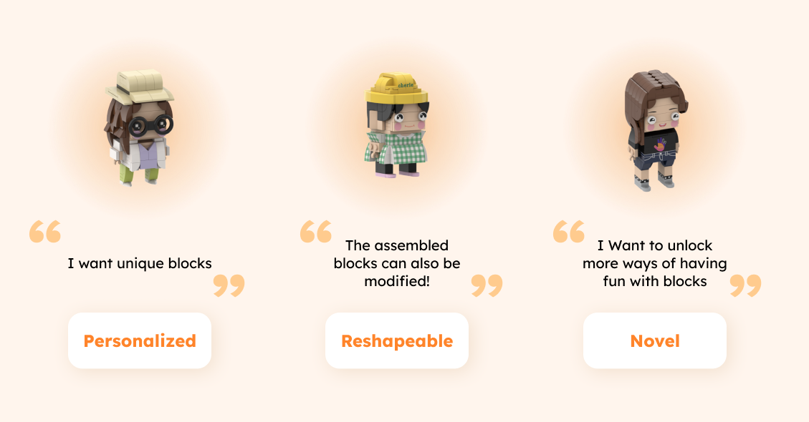
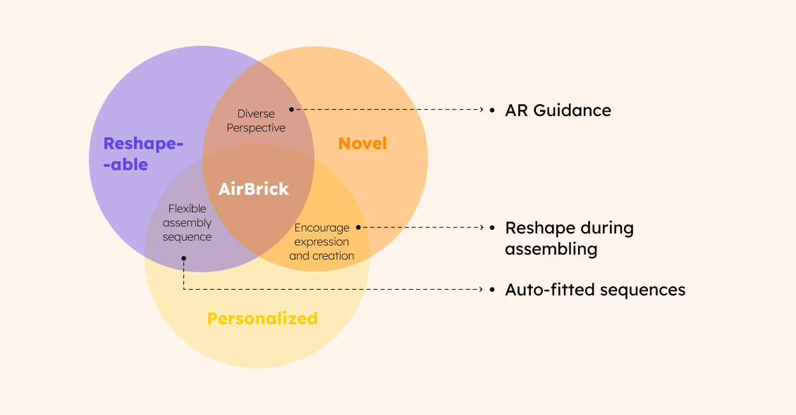
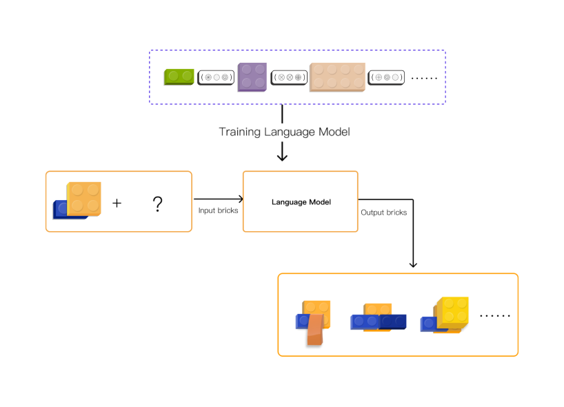

BrickPal.
An assistant for assembling blocks using AR and AI technologies.
we propose a solution that tackles both of the problems above for Lego®-like brick models. In our approach, we visualize the assembly instructions by displaying an overlay using a commercially available Augmented Reality (AR) headset. Using real-time marker-based tracking, users are able to see the 3D-projected assembly guidance in-situ. Alongside the augmented reality interface, we utilize machine learning techniques initially used in Natural Language Processing (NLP) to generate the assembly sequences for any input brick models automatically.
01. The Context
Assembling blocks is popular with all age groups, and people enjoy the hands-on assembling process. The manual we used mostly restricted our creativity, like the printed manual and video-based web manual, and we had to follow the determined sequences carefully. With the assistance of AR, we can better identify which position you need to put the block in. But how can the manual provide that precise guidance and promote creativity at the same time?
02. Personas
After brainstorming, we interviewed 6 LEGO users and then conducted a survey on 106 users. We divide the target users into three main groups of users: They are junior Mocer, novice players, and potential customers. They have different experiences in assembling blocks, and their needs are different. We extracted three keywords from these groups: personalization, reshaping, and novel interaction.
03. Ideation
How might we help customers who are eager to express themselves to gain a novel experience with these building blocks?
04. User Flow

05. Implementation
Natural Language Processing Algorithm inspiration: Assembling the blocks is like telling a story.
AR：Immersive and gamification.

Editing：In-situ creation.


-
06. demo
Team Member
Shi Yao: Computer Vision & AR Engineer
Yang Zhou: Computer Vision & AR Engineer
Tang Xiao: AR Engineer
Ye Hongni: Unity Developer & UX Deigner
Wu Yi: UX Designer
Zhang Ran: Advisor and Tech Support
My Keywords
#AR UX Design
#User Research
#Unity3D developer & C# programming
#Graphic Design